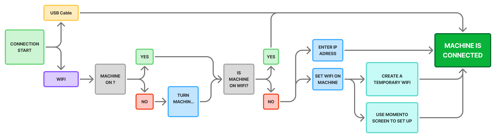
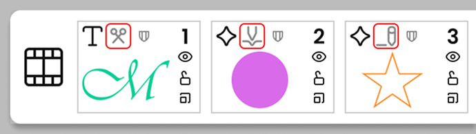
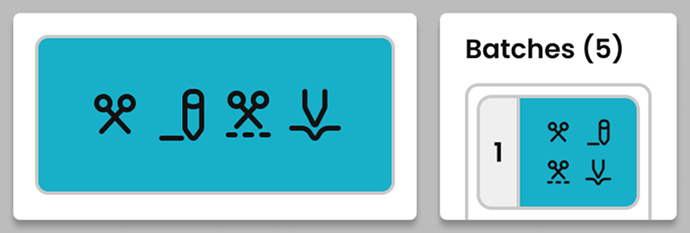

In early 2024 SVP Worldwide planned to release the SINGER® MOMENTO™ crafting and cutting machine. It is a cutting machine specially oriented for crafters and sewists, featuring a large 24-inch cutting surface, touch screen and fast cutting speeds. The goal with the release of this new equipment, was expanding into the field of crafting/cutting machines and expand the customer base.
After developing the crafting app, I was assigned to define both the machine UI and a new tablet app for the crafting part of the existing CREATIVATE ecosystem
| Type of Project | Crafting App |
| Platforms | iOS,Android, Windows and macOS |
| Goal | Create a new Crafting app experience within the existing ecosystem |
| My Role | Product Designer |
| Duration | 24 months |
| Team | Project Manager, Stakeholders, Development Team |
| Tools | Adobe XD, Figma, FigJam, Illustrator, Miro |
EMPATHIZE
THIS IS NEW
Unlike when I started working on the embroidery app, there was not an existing user base of crafters; we were going to enter the world of electronic crafting machines for the first time.
Another important thing to note is that there are other successful crafting machine manufacturers in the market. BBut they had something in common: none of them performed well when cutting fabric.. The goal of our crafting line products was to excel on the crafting with fabric, delivering really good performance and aligning the crafting process with our sewing and embroidery machines.
DEFINE
TARGET AUDIENCE
With other crafting brands already in the market... What can make our brand stand out?. Better performance when crafting with fabrics. Our brand’s crafting products will be oriented toward crafters who have a particular interest in fabrics.
The following personas are the ones that will guide the project:
| Age | 62 · Austin, TX · Retired teacher |
| Profile | Loyal user of the desktop software. Loves spending time in her crafting room. |
| Goals | Continue creating designs easily; smooth transition to the new app |
| Frustrations | Intimidated by new tech. |
| Quote | “I just want the new app to feel familiar and easy to use.” |
| Age | 29 · Portland, OR · Freelance designer |
| Profile | Tech-savvy creative. New to embroidery but loves digital design tools. |
| Goals | Create, edit, and share embroidery designs seamlessly on her tablet. |
| Frustrations | Old tools feel outdated; wants a modern UX. |
| Quote | “My embroidery tools should feel as fluid as my digital art apps.” |
COMPETITORS RESEARCH
I felt It was vital to spend some time researching the competitors, so I could see what answers they found to the questions I was about to face myself. Luckily I had some knowledge already in the brands and machines, as at some point while working for the embroidery software team we had to implement some work related to electronic cutters.
I had a look at the applications Cricut Design Space, Silhouette Studio y Brother Canvas Workspace, focusing on how each one managed the crafting flow..
IDEATION
APP STRUCTURE
The previously released embroidery app was going to be the foundation for the new crafting app.
The main reasons behind this reasoning are:
- Economy: re-using the component and structure of the previous app will reduce the development time, allowing us to focus
- Familiarity: having a similar layout will give the users a feeling of familiarity when using both apps.
DESKTOPIFICATION
Unlike with the embroidery app, there was not an existing computer version of crafting; I had to build it too from scratch. In order to have a satisfactory desktop version experience I had to make several additions on top of the base tablet app based on the Windows and MacOs standards.
- Top Menu: one of the main components on any desktop application. It will include all the required entries and by it the keyboard shortcut related when available.
- Keyboard and Mouse interaction: we must focus on extending the interaction with these devices, offering the imput behaviours tha a desktop user would expect to have.
- Gesture Alternatives:: for desktop we can not rely on or finger gestures to navigate the canvas. We will need to add zoom toolbars and scrollbars.
- Other Standards: another extra elements like tooltips when hovering an element or right click dialogs are a must for the desktop version.
CONNECTING MACHINE
A totally new part of the flow that I needed to tailor carefully was the startup connection. I carefully draw a flow where all the possible connection methods and outcomes were presented. Seting up the machine at the very beggining of the consumer urchase was something we wanted to get right.
CRAFTING THE PROJECT
But even more important was the process of sending the projects from the app into the machine, and performing the operations on each batch.
In order to get right this part of the experience, I had to do a lot of hands-on tesing with a machine prototype:
SUPPORT ILLUSTRATIONS
In the process of crafting with the cutter, there are many steps and several interchangeable elments that need to be verified to be succesfull. I thought it was a good idea to help the user by adding illustrations, so I created a full set of tools and mats illustrations to match the possible user choices.
PROTOTYPING
MOMENTO MACHINE UI
The Singer MOMENTO Crafting machine was provided by an OEM company, but we had a chance to add some branding on top of it; Industrial designers from our company designed the exterior case, while I re-skinned the screen UI.
I started designing the Singer themed UI for the machine only knowing the pixel dimmensions for the screen and giving some things for granted. But once we started implementing the design working closely with the OEM company, we did find some surprises:
- The hardware for the screen only allowed single-touch actions. A Tap+drag gesture was not possible; had to go back and redraw some things that relied in this gestures and add scrollbars with buttons to tap.
- The software in the machine did not dinamically populate text; the text in the UI was done with bitmaps. Also as the memory was low, we had to make language packs with the text images for each language that could fit into the machine.
APP COLOR THEME
As mentioned before, I felt re-using the embroidery app design system, coloring and theming was the best way to go. I only needed to assign a new different accent color to the crafting app. I assigned a purple shade to the crafting experience, trying to find a different value that contrasted with the embroidery theme, but not being too far.
DESKTOP ONLY COMPONENTS
The UI for the main canvas page received some extra additions for the desktop version:
1. Top menu
It has all the main options and actions with keyboard shortcuts listed.
2. Zoon Toolbar
An alternative on desktop to the zooming gestures in tablet.
3. Hover Tooltips
Hovering on any area will show its name.
4. Right Click Dialog
Some handy shortcuts will show.
5. Scrollbars
Another alternative to touch gestures
DIFFERENT ACTIONS
One of the difficulties I did face when working on this project was the fact that the crafting machine allowed many different type of operations by using different tools and accessories. It allowed cutting, perforated cutting, drawing, embossing, debossing...
I had to find a way to represent all this machine actions so they were easily visible and understood by the user.
When set of tools was finally decided I created a set of action icons that could reflect the action each object created on the app would perform.
CUT
PERFORATE
DRAW
SCORE
ENGRAVE
DEBOSS
This newly created symbols were now to be placed in strategic spots:
By adding the action label by the object type, we can see at a glance what each object is meant to act like in the machine. .
Same symbols will be visible at the stage where we feed materials to the machine. We will see what actions are performed on each batch of material.
TESTING
IN-HOUSE TESTING
When the first production machines arrived into the company, we performed some user testing within the company. As the HQ are in Sweden, I did write the user tests and assisted remotely.
The tasks requested were:
- Open the app.
- Find the crafting machine in the network.
- Load a design.
- Send the design and cut it on the machine using vinyl.
- Cut the rest of batches of vinyl colors.
FULL USER JOURNEY
Getting into the users’ shoes and once machines were available, I tried to describe a full user journey.
I tried to describe how I felt through the whole process from umboxing to finishing a cut on fabric using the machine.
Some part of the journey are not related to the UX/UI at all, but I did find some pain points I should address.
SMALL KEYBOARD
One of the biggest problems I did find at testing was the fact that keyboard on the machine touch screen was too small. It was difficult to be accurate and you need to switch keyboards constantly to change characters.
There was nothing I could do about the screen size, but after conversations with the team, we planned for alternative input methods such as QR-code pairing and automatic network discovery. These changes when implemented will allow users to connect the machine pretty faster, and improved the overall user satisfaction.
CONCLUSIONS
RESULTS
The crafting products were well received. There were positive comments about the interaction machine/app and the way the app guides the user through all the process.
The new line of crafting products will increase the brand visibility for younger audiences and the online crafting community.
The app and machine will add to the CREATIVATE ecosystem a new source of revenue, increasing the user retention and selling accessories.
Technical complexity is hidden under an experience that feels fun and easy thanks to the use of illustrations throughout the process.
Both the Momento UI and the crafting app are in line with the ecosystem design. This gives the user a feeling of familiarity and trust.
As with embroidery, the crafting app was designed allowing the future addition of extended features easily.
LEARNINGS
This project was a milestone. Firstly because it expanded our product family but it also improved that a consistent design language can adapt across platforms and devices. But tracing my steps back, I can also admit it was a highly chaotic for many different reasons:
- From the beginning there were too many unknown subjects on the project. At times it was very tricky to move forward.
- The machine went through patent and copyright issues.
- The programming language changed twice, first into Xamarin, and later to .net MAUI. All these changes were never beneficial for the development and the look of the UI.
- We partially relied on consultant developers that were with us for 6 month periods. After that time someone new arrived and we had to teach about the project.
- The ownership of the project changed at least 3 times as far as I can remember.
But even with all these difficulties, when a team is sharing the common goal of creating something great, all the problems are surpassed.
It was a great project to work in.